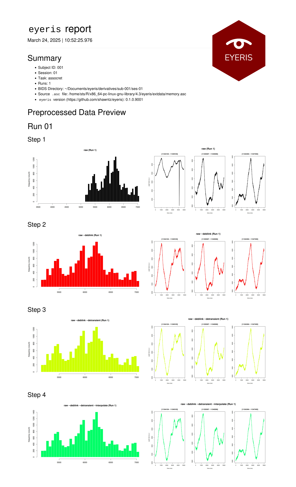
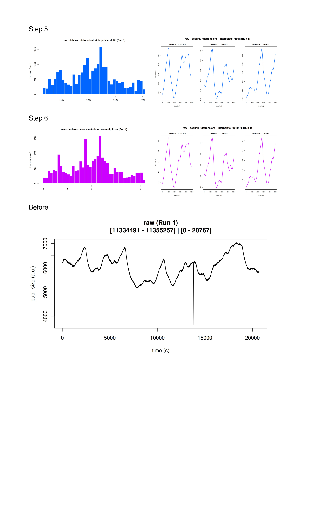
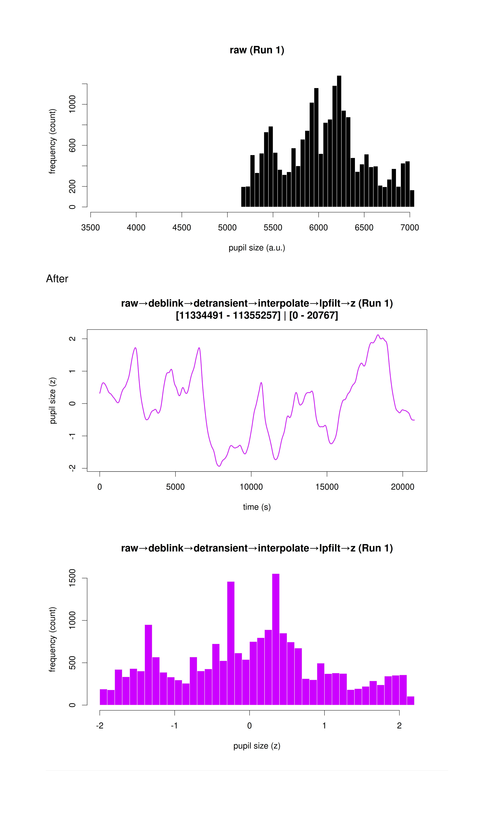
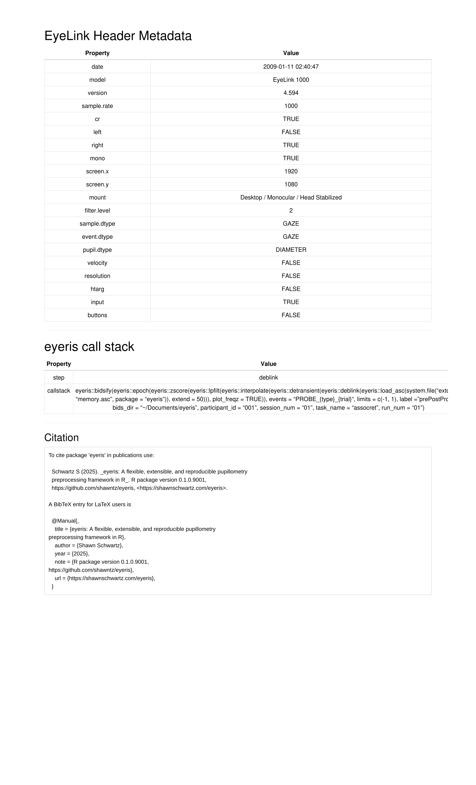

1️⃣ Setup
After extracting epochs from your data,
eye <- eye |>
epoch(
events = "PROBE_START_{trial}",
limits = c(0, 1),
label = "probeEpochs",
calc_baseline = TRUE,
apply_baseline = TRUE,
baseline_type = "sub",
baseline_events = "DELAY_STOP_*",
baseline_period = c(-1, 0)
)(for more details on extracting pupil data epochs, see the Extracting Data Epochs and Exporting Pupil Data vignette; for more details on this specific example code shown above, click here).
2️⃣ Generating the Interactive HTML Reports
When running bidsify on the previously epoched data, be
sure to set html_report to TRUE (as shown
below).
bidsify(
eyeris = eye_1c,
bids_dir = "~/Documents/eyeris",
participant_id = "001",
session_num = "01",
task_name = "assocmem",
run_num = "01",
save_raw = TRUE, # Also save raw timeseries
html_report = TRUE # Generate an interactive preprocessing summary report
)Which will create a directory structure like this:
eyeris
└── derivatives
└── sub-001
└── ses-01
├── eye
│ ├── sub-001_ses-01_task-assocret_run-01_desc-timeseries_pupil.csv
│ └── sub-001_ses-01_task-assocret_run-01_epoch-prePostProbe_desc-preproc_pupil.csv
├── source
│ └── figures
│ └── run-01
│ ├── epoch_prePostProbe
│ │ ├── run-01_PROBE_START_22_1.png
│ │ ├── run-01_PROBE_START_22_2.png
│ │ ├── run-01_PROBE_START_22_3.png
│ │ ├── run-01_PROBE_START_22_4.png
│ │ ├── run-01_PROBE_START_22_5.png
│ │ ├── run-01_PROBE_START_22_6.png
│ │ ├── ...
│ │ ├── run-01_PROBE_STOP_22_1.png
│ │ ├── run-01_PROBE_STOP_22_2.png
│ │ ├── run-01_PROBE_STOP_22_3.png
│ │ ├── run-01_PROBE_STOP_22_4.png
│ │ ├── run-01_PROBE_STOP_22_5.png
│ │ ├── run-01_PROBE_STOP_22_6.png
│ │ ├── ...
│ ├── run-01_fig-1_desc-histogram.jpg
│ ├── run-01_fig-1_desc-timeseries.jpg
├── sub-001_epoch-prePostProbe_run-01.html
└── sub-001.html
9 directories, 80 filesHere, notice specifically these two files:
sub-001.html sub-001_epoch-prePostProbe_run-01.html
3️⃣ Previewing your Entire Pupil Timeseries
sub-001.htmlwill look something like this:




4️⃣ Data QC of Extracted Pupil Epochs with Interactive Reports
Meanwhile,
sub-001_epoch-prePostProbe_run-01.htmlwill enable you to interact with images of each extracted data epoch (for which you will see include separate images for each epoch at each sequential stage of the preprocessing pipeline). This feature was intentionally designed to make data QC a default behavior without the barriers of needing to code up a script with loops to print out images of each preprocessing step for each epoch for each participant.As you see below, you can use your left/right arrow keys on your keyboard to quickly scan through the data from each trial, while simultaneously watching what happened to any given epoch’s signal from start to finish! We hope this intuitive feature is fun and helps you make more appropriate preprocessing decisions to optimize your signal-to-noise ratio with as little overhead as possible!

📚 Citing eyeris
If you use the eyeris package in your research, please
cite it!
Run the following in R to get the citation:
citation("eyeris")
#> To cite package 'eyeris' in publications use:
#>
#> Schwartz S (2025). _eyeris: Flexible, Extensible, & Reproducible
#> Processing of Pupil Data_. R package version 0.1.0.9001,
#> https://github.com/shawntz/eyeris,
#> <https://shawnschwartz.com/eyeris>.
#>
#> A BibTeX entry for LaTeX users is
#>
#> @Manual{,
#> title = {eyeris: Flexible, Extensible, & Reproducible Processing of Pupil Data},
#> author = {Shawn Schwartz},
#> year = {2025},
#> note = {R package version 0.1.0.9001,
#> https://github.com/shawntz/eyeris},
#> url = {https://shawnschwartz.com/eyeris},
#> }